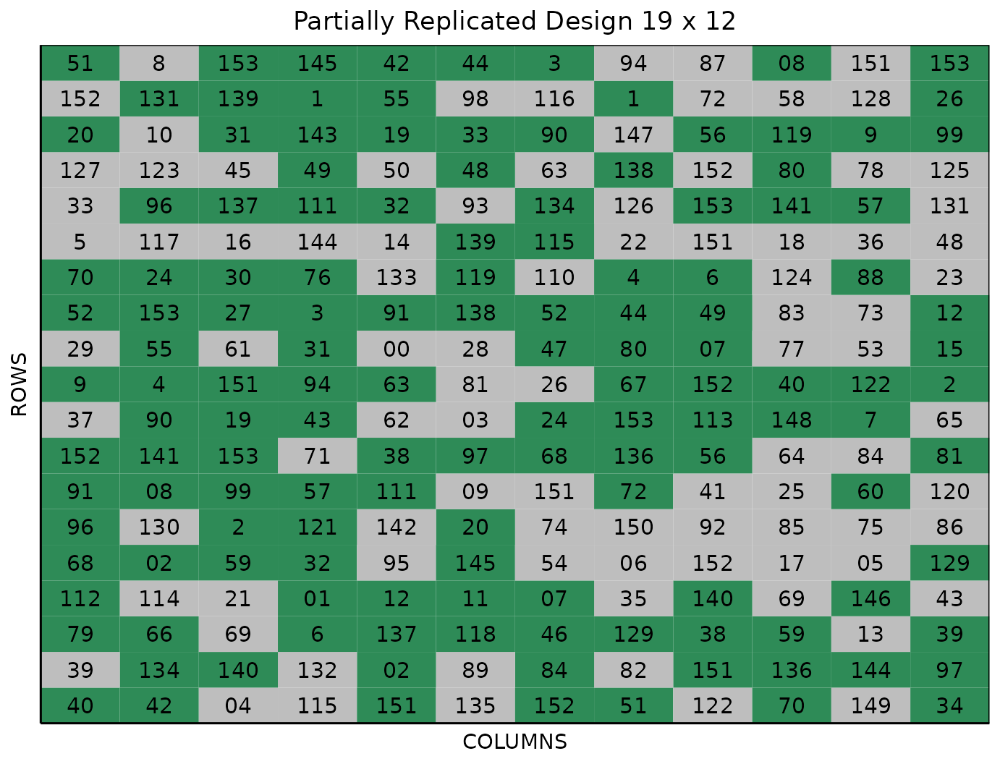

Optimized Multi-Location P-rep Design
Source:vignettes/multi_location_prep.Rmd
multi_location_prep.RmdThis vignette shows how to generate an optimized
multi-location partially replicated design using both the
FielDHub Shiny App and the scripting function
multi_location_prep() from the FielDHub R
package.
Overview
Partially replicated designs are frequently used in initial generation field trials. This design type involves replicating a portion of the entries, while the remaining entries only appear once in the experiment. The optimized partially replicated (p-rep) design utilizes a genotype allocation matrix to determine the distribution of replicated and non-replicated entries across multiple locations, employing the principles of incomplete block designs (IBD).
Use case
Suppose there is a plant breeding field trial with 150 entries to be
tested across five environments, where up to seven replications of each
entry are allowed. Additionally, the project includes three checks; each
replicated six times. We can generate an optimized multi-location
partially replicated design using these parameters. This strategy
guarantees that all treatments are present in all environments but in
different amounts of replications. We can generate this design using the
FielDHub Shiny app and the FielDHub multi_location_prep()
standalone function in R.
1. Using the FielDHub Shiny App
Once the app is running, click the tab Partially Replicated Design and select Optimized Multi-Location p-rep from the dropdown.
Then, follow the following steps where we will show how to generate an optimized partially replicated design.
Inputs
-
Import entries’ list? Choose whether to import a list with entry numbers and names for genotypes or treatments.
If the selection is
No, that means the app is going to generate synthetic data for entries and names of the treatment/genotypes based on the user inputs.If the selection is
Yes, the entries list must fulfill a specific format and must be a.csvfile. The file must have the columnsENTRYandNAME. TheENTRYcolumn must have a unique entry integer number for each treatment/genotype. The columnNAMEmust have a unique name that identifies each treatment/genotype. BothENTRYandNAMEmust be unique, duplicates are not allowed. In the following table, we show an example of the entries list format.
| ENTRY | NAME |
|---|---|
| 1 | Genotype1 |
| 2 | Genotype2 |
| 3 | Genotype3 |
| 4 | Genotype4 |
| 5 | Genotype5 |
| 6 | Genotype6 |
| 7 | Genotype7 |
| 8 | Genotype8 |
| 9 | Genotype9 |
| 10 | Genotype10 |
Enter the number of entries in the Input # of Entries box as a comma separated list. In our example we will have 150 entries, so we enter 150 in the box for our sample experiment.
Select whether or not the experiment will contain checks under the Include checks? option. The example experiment does, so set this to
Yes.Once we select
Yeson the above option, two more boxes appear, the first being Input # of Checks where we set how many checks to include in the experiment. In our case this is 3.Next to this option we have Input # Check’s Reps, where we set the number of replications for each check respectively in a comma separated list. We are replicating each of the 3 checks 6 times, so enter
6,6,6in this box.Enter the number of locations in Input # of Locations. We will run this experiment over 5 locations, so set Input # of Locations to 5.
Set the total number of replications of the entries over all locations in the
# of Copies Per Entrydropdown box. For this example experiment, set this to 7.Select
serpentineorcartesianin the Plot Order Layout. For this example we will use the defaultserpentinelayout.To ensure that randomizations are consistent across sessions, we can set a random seed in the box labeled Random Seed. In this example, we will set it to
2456.(Optional) Enter the starting plot number in the Starting Plot Number box. Since the experiment has multiple locations, you must enter a comma separated list of numbers the length of the number of locations for the input to be valid. In this example, we will set it as
1,1001,2001,3001,4001.(Optional) Enter the location names in the Input Location Name box. Since the experiment has six locations, you must enter a comma separated list of strings for the names of the environments. In this example, we will set it as
LOC1,LOC2,LOC3,LOC4,LOC5.
Once we have entered the information for our experiment on the left
side panel, click the Run! button to run the design.
You will then be prompted to select the dimensions of the field from the
list of options in the dropdown in the middle of the screen with the box
labeled Select dimensions of field. In our case, we
will select 12 x 19. Click the Randomize!
button to randomize the experiment with the set field dimensions and to
see the output plots. If you change the dimensions again, you must
re-randomize.
If you change any of the inputs on the left side panel after running an experiment initially, you have to click the Run and Randomize buttons again, to re-run with the new inputs.
Outputs
After you run a Optimized Multi-Location P-rep Design in
FielDHub and set the dimensions of the field, there are several ways to
display the information contained in the field book. The first tab,
Get Random, shows the option to change the dimensions
of the field and re-randomize, as well as the genotype allocation matrix
generated for the optimized p-rep design, which displays the
replications of each genotype over each location, much like the matrix
generated in sparse allocation.
Randomized Field
The Randomized Field tab displays a graphical representation of the randomization of the entries in a field of the specified dimensions. The replicated entries are the green colored cells, with the which cells appearing only once in the location. The display includes numbered labels for the rows and columns. You can copy the field as a table or save it directly as an Excel file with the Copy and Excel buttons at the top.
Plot Number Field
On the Plot Number Field tab, there is a table display of the field with the plots numbered according to the Plot Order Layout specified, either serpentine or cartesian. You can see the corresponding entries for each plot number in the field book. Like the Randomized Field tab, you can copy the table or save it as an Excel file with the Copy and Excel buttons.
Field Book
The Field Book displays all the information on the experimental design in a table format. It contains the specific plot number and the row and column address of each entry, as well as the corresponding treatment/genotype on that plot. This table is searchable, and we can filter the data in relevant columns.
2. Using the FielDHub function:
multi_location_prep().
You can run the same design with the function
multi_location_prep() in the FielDHub
package.
First, you need to load the FielDHub package typing,
Then, you can enter the information describing the above design like this:
optim_multi_prep <- multi_location_prep(
lines = 150,
l = 5,
copies_per_entry = 7,
checks = 3,
rep_checks = c(6,6,6),
plotNumber = c(1,1001,2001,3001,4001),
locationNames = c("LOC1", "LOC2", "LOC3", "LOC4", "LOC5"),
seed = 2456
)Details on the inputs entered in
optimized_arrangement() above
The description for the inputs that we used to generate the design,
-
lines = 150is the number of entries in the field. -
l = 5is the number of locations. -
copies_per_entry = 7is the number of copies of each entry. -
checks = 3is the (optional) number of checks. -
rep_checks = c(6,6,6)is the (optional) number of replications of each check, in a vector the length of the number of checks. -
locationNames = c("LOC1", "LOC2", "LOC3", "LOC4", "LOC5")are optional names for the locations. -
seed = 2456is the random seed to replicate identical randomizations.
Print optim_multi_prep object
To print a summary of the information that is in the object
optim_multi_prep, we can use the generic function
print().
The sparse_allocation() function returns a list of 4
objects, designs, list_locs,
allocation, and size_locations. The object
designs contains the randomization and information about
the design parameters for each location, while list_locs is
a list of data frames. Each data frame has two columns;
ENTRY and NAME with the information to
randomize to each environment. The object allocation is the
binary allocation matrix of genotypes to locations, and
size_locations is a data frame with a column for each
location and a row indicating the size of the location (number of field
plots).
For example, we can display the allocation object. Let
us print the first ten genotypes allocation.
LOC1 LOC2 LOC3 LOC4 LOC5
1 2 1 2 1 1
2 1 2 1 1 2
3 1 1 1 2 2
4 1 1 2 1 2
5 1 2 1 2 1
6 2 1 1 2 1
7 2 1 2 1 1
8 1 2 2 1 1
9 1 2 1 1 2
10 2 2 1 1 1Let us add two new columns to the allocation table. We can add the number of copies by genotype; it should be 7 for all of them. We can also add the average allocation by genotype. Each treatment will appear 1.4 times in average.
| LOC1 | LOC2 | LOC3 | LOC4 | LOC5 | Copies | Avg | |
|---|---|---|---|---|---|---|---|
| Gen-1 | 2 | 1 | 2 | 1 | 1 | 7 | 1.4 |
| Gen-2 | 1 | 2 | 1 | 1 | 2 | 7 | 1.4 |
| Gen-3 | 1 | 1 | 1 | 2 | 2 | 7 | 1.4 |
| Gen-4 | 1 | 1 | 2 | 1 | 2 | 7 | 1.4 |
| Gen-5 | 1 | 2 | 1 | 2 | 1 | 7 | 1.4 |
| Gen-6 | 2 | 1 | 1 | 2 | 1 | 7 | 1.4 |
| Gen-7 | 2 | 1 | 2 | 1 | 1 | 7 | 1.4 |
| Gen-8 | 1 | 2 | 2 | 1 | 1 | 7 | 1.4 |
| Gen-9 | 1 | 2 | 1 | 1 | 2 | 7 | 1.4 |
| Gen-10 | 2 | 2 | 1 | 1 | 1 | 7 | 1.4 |
We can manipulate the sparse_allocation object as any other list in
R. For example, we can save the design randomizations to an object
called designs, and then index based on location using the
dollar sign operator. We can first display the design parameters for
LOC1 with the following code:
design_randomization <- optim_multi_prep$designs
print(design_randomization$LOC1)which outputs:
Partially Replicated Design
Information on the design parameters:
List of 8
$ min_distance : num 4
$ rows : num 19
$ columns : num 12
$ treatments_with_reps : int 63
$ treatments_with_no_reps: int 90
$ locations : num 1
$ planter : chr "serpentine"
$ seed : num 2456
10 First observations of the data frame with the partially_replicated field book:
ID EXPT LOCATION YEAR PLOT ROW COLUMN CHECKS ENTRY TREATMENT
1 1 PrepExpt LOC1 2023 1 1 1 43 43 G-43
2 2 PrepExpt LOC1 2023 2 1 2 46 46 G-46
3 3 PrepExpt LOC1 2023 3 1 3 0 102 G-102
4 4 PrepExpt LOC1 2023 4 1 4 0 114 G-114
5 5 PrepExpt LOC1 2023 5 1 5 6 151 CH-151
6 6 PrepExpt LOC1 2023 6 1 6 0 142 G-142
7 7 PrepExpt LOC1 2023 7 1 7 76 152 CH-152
8 8 PrepExpt LOC1 2023 8 1 8 58 58 G-58
9 9 PrepExpt LOC1 2023 9 1 9 0 118 G-118
10 10 PrepExpt LOC1 2023 10 1 10 77 77 G-77And for environment 2 by changing the location to print to
LOC2:
print(design_randomization$LOC2)which outputs:
Partially Replicated Design
Information on the design parameters:
List of 8
$ min_distance : num 4
$ rows : num 19
$ columns : num 12
$ treatments_with_reps : int 63
$ treatments_with_no_reps: int 90
$ locations : num 1
$ planter : chr "serpentine"
$ seed : num 2456
10 First observations of the data frame with the partially_replicated field book:
ID EXPT LOCATION YEAR PLOT ROW COLUMN CHECKS ENTRY TREATMENT
1 1 PrepExpt LOC2 2023 1001 1 1 37 37 G-37
2 2 PrepExpt LOC2 2023 1002 1 2 39 39 G-39
3 3 PrepExpt LOC2 2023 1003 1 3 0 99 G-99
4 4 PrepExpt LOC2 2023 1004 1 4 0 120 G-120
5 5 PrepExpt LOC2 2023 1005 1 5 5 151 CH-151
6 6 PrepExpt LOC2 2023 1006 1 6 0 136 G-136
7 7 PrepExpt LOC2 2023 1007 1 7 78 152 CH-152
8 8 PrepExpt LOC2 2023 1008 1 8 60 60 G-60
9 9 PrepExpt LOC2 2023 1009 1 9 0 123 G-123
10 10 PrepExpt LOC2 2023 1010 1 10 80 80 G-80Access to optim_multi_prep output
The object designs we saved
optim_multi_prep$designs to is a list consisting of all the
information displayed in the output tabs in the FielDHub app: design
information, plot layout, plot numbering, entries list, and field book,
indexed by each location in the experiment. These are accessible by the
$ operator, i.e. designs$LOC1$layoutRandom or
designs$LOC1$fieldBook for LOC1, etc.
designs$LOC1$fieldBook is a data frame containing
information about every plot in the field, with information about the
location of the plot and the treatment in each plot. As seen in the
output below, the field book has columns for ID,
EXPT, LOCATION, YEAR,
PLOT, ROW, COLUMN,
CHECKS, ENTRY, and TREATMENT.
Let us see the first 10 rows of the field book for the first location in this experiment.
field_book <- design_randomization$LOC1$fieldBook
head(field_book, 10) ID EXPT LOCATION YEAR PLOT ROW COLUMN CHECKS ENTRY TREATMENT
1 1 PrepExpt LOC1 2023 1 1 1 43 43 G-43
2 2 PrepExpt LOC1 2023 2 1 2 46 46 G-46
3 3 PrepExpt LOC1 2023 3 1 3 0 102 G-102
4 4 PrepExpt LOC1 2023 4 1 4 0 114 G-114
5 5 PrepExpt LOC1 2023 5 1 5 6 151 CH-151
6 6 PrepExpt LOC1 2023 6 1 6 0 142 G-142
7 7 PrepExpt LOC1 2023 7 1 7 76 152 CH-152
8 8 PrepExpt LOC1 2023 8 1 8 58 58 G-58
9 9 PrepExpt LOC1 2023 9 1 9 0 118 G-118
10 10 PrepExpt LOC1 2023 10 1 10 77 77 G-77Plot field layout
For plotting the layout in function of the coordinates
ROW and COLUMN in the field book object we can
use the generic function plot() as follows. This plots only
the first location, but this is indexable by location using the dollar
sign operator as well.
Field Layout for Location 1
plot(design_randomization$LOC1)
In the figure above, green plots contain replicated entries, and gray plots contain entries that only appear once.
Field Layout for Location 5
Also, for example the location five:
plot(design_randomization$LOC5)